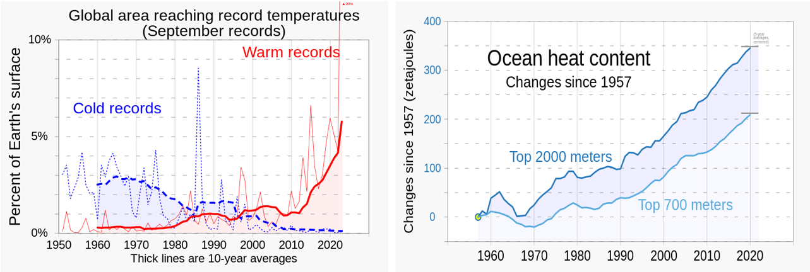
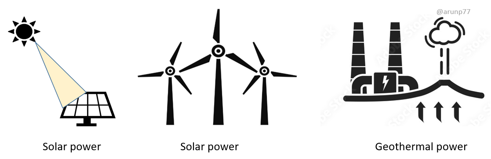
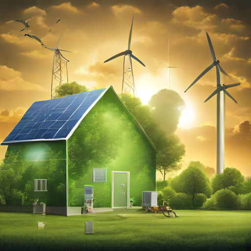

Climate change is one of the most pressing issues facing our planet today. It is a complex issue with far-reaching consequences that affect all aspects of our lives.

Image credit: Left image:
RCraig09, CC BY-SA 4.0,
and Right image: RCraig09,
CC BY-SA 4.0, via Wikimedia Commons
Causes of Climate Change
The main cause of climate change is human activity, primarily the burning of fossil fuels such as coal, oil, and natural gas. These activities release
green house gases, such as carbon dioxide, into the atmosphere. These gases trap heat from the sun, causing the Earth’s temperature to rise.
Green house gases: Greenhouse gases are the gases in the atmosphere that raise the surface temperature of planets such as the Earth. What
distinguishes them from other gases is that they absorb the wavelengths of radiation that a planet emits, resulting in the greenhouse effect. The Earth is
warmed by sunlight, causing its surface to radiate heat, which is then mostly absorbed by water vapor (H2O), carbon dioxide (CO2),
methane (CH4), nitrous oxide (N2O), and ozone (O3). Without greenhouse gases, the average temperature of Earth's surface
would be about −18 °C (0 °F), rather than the present average of 15 °C (59 °F) [Reference].
(for Celsius to Fahrenheit conversion see the [link])
Green house effect: The greenhouse effect occurs when greenhouse gases in a planet's atmosphere trap some of the heat radiated from the
planet's surface, raising its temperature. This process happens because stars emit shortwave radiation that passes through greenhouse gases, but planets
emit longwave radiation that is partly absorbed by greenhouse gases. That difference reduces the rate at which a planet can cool off in response to being
warmed by its host star. Adding to greenhouse gases further reduces the rate a planet emits radiation to space, raising its average surface temperature
[Reference].
Climate change is already having a significant impact on our planet. The Earth’s average temperature has risen by about 1 degree Celsius since the
pre-industrial period. This may not seem like much, but it is enough to cause a range of changes, including:
Rising sea levels: As the Earth’s temperature rises, more water evaporates from the oceans. This water then returns to the
Earth in the form of rain or snow, but some of it remains in the atmosphere as vapor. This causes the oceans to expand, and sea levels to rise.
Extreme weather events: Climate change is causing more extreme weather events, such as heat waves, droughts, floods, and wildfires.
These events are having a devastating impact on communities around the world.
Loss of biodiversity: Climate change is also hurting biodiversity. The Earth’s ecosystems are being disrupted, and many species are being lost.
Mitigation and Adaptation
There are two main approaches to addressing climate change:
Mitigation: Mitigation involves reducing greenhouse gas emissions and preventing further warming. This can be done by switching to
renewable energy sources, improving energy efficiency, and planting trees.
Adaptation: Adaptation involves preparing for the impacts of climate change that are already happening. This can include building
seawalls to protect coastal communities from rising sea levels and developing drought-resistant crops.
International Cooperation
Addressing climate change requires international cooperation. The Paris Agreement, adopted in 2015, is an international treaty that aims to limit global
warming to well below 2 degrees Celsius, preferably to 1.5 degrees Celsius, compared to pre-industrial levels. The agreement also aims to strengthen the
ability of countries to deal with the impacts of climate change.
Individual Actions
While international cooperation is essential, individual actions can also make a difference. There are many things that we can do as individuals to reduce
our carbon footprint and help to address climate change. These include:
Driving less and walking, biking, or taking public transportation more often.
Using less energy at home by using energy-efficient appliances, turning off lights when not in use, and taking shorter showers.
Eating less meat and more plant-based foods.
Reducing, reusing, and recycling.
Conclusion of the section
Climate change is a complex and challenging issue, but it is not insurmountable. With international cooperation, individual action, and technological innovation,
we can address climate change and build a more sustainable future.
How to address the climate change
Addressing climate change requires a multifaceted approach that encompasses mitigation, adaptation, and international cooperation. Here are some of the key strategies
currently being considered and implemented to curb the effects of climate change:
Renewable Energy Transition:
Transitioning to renewable energy sources, such as solar, wind, and geothermal power, is crucial to reduce our reliance on fossil fuels, the primary contributors
to greenhouse gas emissions. Governments and industries are investing heavily in renewable energy technologies to increase their share in the global energy mix.

Energy Efficiency and Conservatio: Improving energy efficiency in buildings, transportation, and industrial processes can significantly reduce
energy consumption and associated emissions. This involves adopting energy-efficient appliances, optimizing building designs, and promoting sustainable transportation options.

Image created by AI technologies.
Carbon Capture and Storage (CCS): CCS technology captures carbon dioxide (CO2) emissions from industrial processes and stores them underground,
preventing them from entering the atmosphere. While CCS is not a standalone solution, it can complement other mitigation strategies to further reduce emissions.
Forest Conservation and Enhancement: Forests play a vital role in absorbing CO2 from the atmosphere and storing it in their biomass. Protecting existing
forests and promoting reforestation efforts can significantly enhance the natural carbon sink and contribute to mitigating climate change.
Sustainable Land Use Practices: Sustainable land use practices, such as minimizing deforestation, adopting regenerative agriculture, and conserving
natural habitats, can help conserve carbon and promote biodiversity, further enhancing climate resilience.
International Cooperation and Agreements: International cooperation is essential to address climate change on a global scale. The Paris Agreement, a
landmark international pact, outlines a global framework for reducing greenhouse gas emissions and adapting to climate change.
Public Awareness and Behavioral Change: In addition to policy and technological interventions, fostering public awareness and encouraging behavioral
changes are crucial to mitigating climate change. This includes promoting sustainable lifestyles, reducing consumption, and supporting climate-friendly policies.
Monitoring Climate Change
Climate monitoring employs a diverse set of techniques and technologies to comprehensively understand the Earth's changing climate. This involves the integration of satellite data, ground-based observations, and sophisticated climate models.
Satellite Technology:
Utilizes satellite-based instruments for remote sensing.
Provides real-time, global-scale data on various climate parameters.
Enables monitoring of temperature, sea levels, atmospheric composition, and land cover changes.
Ground-Based Observations:
Involves a network of weather stations, buoys, and sensors deployed across the globe.
Collects localized data on temperature, precipitation, wind patterns, and other meteorological variables.
Ground-based observations offer high-resolution insights and validate satellite data
Climate Models:
Advanced computational models simulate complex interactions within the Earth's climate system.
Integrates historical data, satellite observations, and ground-based measurements.
Facilitates the projection of future climate scenarios for informed decision-making.
Key Indicators and Parameters Tracked:
Monitoring global surface temperatures: Monitoring global surface temperatures to identify trends and anomalies.
Assessing temperature variations in oceans and atmosphere.
Sea Level Changes: Tracking sea level rise through satellite altimetry and tide gauges.
Greenhouse Gas Concentrations
Glacial Retreat and Ice Cover: Observing changes in glacial mass and ice cover through satellite imagery.
Oceanic Conditions: (Monitoring ocean temperatures, currents, and acidity levels.)
Extreme Weather Events
Environmental Data
Importance of Quality Data in Climate Research:
Accurate and reliable data are the foundation of effective climate research.
Precision in measurements ensures the credibility of findings and predictions.
High-quality data enable policymakers to make informed decisions regarding climate change mitigation and adaptation.
Data Sources:
Understanding and addressing climate change demands a comprehensive understanding of the Earth's climate system and its response to various factors, including human activities. This requires a vast amount of data collected from various sources.
Governmental Sources:
Utilization of data from meteorological agencies, environmental ministries, and related government bodies.
National and regional climate monitoring networks contribute valuable information.
Scientific Initiatives:
Collaboration with scientific institutions and research centers enhances access to specialized climate datasets.
Academic research plays a crucial role in advancing our understanding of climate patterns
Collaborative Initiatives:
Inclusion of data from international collaborations such as IPCC (Intergovernmental Panel on Climate Change) and WMO (World Meteorological Organization).
Shared databases and open data initiatives promote global cooperation in addressing climate challenges.
Here's a breakdown of the key data sources for climate change research:
African Centre of Meteorological Applications for Development (ACMAD), Egyptian Meteorological Authority (EMA), South African Weather Service (SAWS), Nigerian Meteorological Agency (NIMET)
Australia
Australian Bureau of Meteorology (BOM), Bureau of Meteorology (BOM) in Papua New Guinea, Bureau of Meteorology (BOM) in Solomon Islands
Oceania
New Zealand Meteorological Service (MetService), Bureau of Meteorology (BOM) in New Caledonia, French Polynesia Meteorological Service (RSMC FP)
play a significant role in collecting and analyzing data related to environmental changes. They monitor various parameters such as greenhouse gas emissions, deforestation rates, air and water quality, and changes in biodiversity.
This data provides insights into the human footprint on the environment and its impact on climate change.
Ministry of Environment and Energy of Denmark (Miljø- og Fødevareministeriet)
Responsible for environmental protection, sustainable development, and food safety
Ministry of the Environment, Energy and Infrastructure of France (Ministère de la Transition écologique, de la Cohésion des territoires et des Relations avec les collectivités territoriales)
Oversight of environmental protection, climate change mitigation and adaptation, and energy transition
Responsible for environmental protection, nature conservation, building, and nuclear safety
Government Bodies: Government agencies responsible for agriculture, forestry, transportation, and other sectors also contribute valuable data to climate change research. For instance, agricultural
agencies collect data on crop yields and livestock production, which can help understand the impact of climate change on food security. Forestry agencies monitor forest cover and health, providing information on carbon
sequestration and ecosystem services. Transportation agencies collect data on vehicle emissions and fuel consumption, which contributes to understanding greenhouse gas emissions from the transportation sector.
Challenges in Collecting and Managing Diverse Datasets:
Data Heterogeneity:
Integration of data from various sources with different formats and standards poses challenges.
Harmonization efforts are essential to ensure consistency and comparability.
Spatial and Temporal Resolution:
Climate data often vary in spatial and temporal resolutions.
Balancing granularity while maintaining a comprehensive view is a persistent challenge.
Data Volume and Complexity:
The sheer volume and complexity of environmental data require robust infrastructure for storage and processing.
Advanced data management tools and technologies are crucial for handling large datasets.
Data Quality Assurance:
Ensuring the accuracy and reliability of data require thorough quality control measures.
Continuous monitoring and validation processes are essential to identify and rectify errors.
Ethical and Legal Considerations:
Addressing privacy concerns and ensuring ethical use of data.
Compliance with international and national regulations regarding data sharing and access.
International Cooperation and Agreements
Addressing climate change requires concerted global action and international cooperation. Several important agreements have been established to guide and support international efforts to
mitigate and adapt to climate change. Here are some of the key international agreements:
Adopted in 1992, the UNFCCC is the primary international treaty addressing climate change. It establishes a framework for countries to cooperate in the reduction of
greenhouse gas emissions and the adaptation to the effects of climate change. The UNFCCC has been ratified by 197 parties, representing virtually every country in the world.
The Kyoto Protocol, adopted in 1997 and entered into force in 2005, is an international agreement that set legally binding emission reduction targets for industrialized
countries. The protocol aimed to reduce greenhouse gas emissions by an average of 5% below 1990 levels over the period 2008-2012. However, the United States, the world's
largest emitter at the time, never ratified the Kyoto Protocol, and some other major emitters also did not meet their targets.
The Paris Agreement, adopted in 2015, is a landmark international agreement that aims to strengthen the global response to the threat of climate change. It establishes a framework
for countries to voluntarily set ambitious national targets for reducing greenhouse gas emissions and to accelerate their efforts to adapt to the effects of climate change. The Paris
Agreement has been ratified by 196 parties, representing over 195 countries.
The IPCC is an intergovernmental body established by the World Meteorological Organization (WMO)
and the United Nations Environment Programme (UNEP)
to provide the world with the most up-to-date scientific assessment of climate change. The IPCC assesses the physical science basis of climate change, its impacts, and the options for
mitigation and adaptation. The IPCC's reports are considered authoritative sources of information on climate change and have informed many international agreements and policies.
The Green Climate Fund (GCF) is a financial mechanism established to support developing countries in their efforts to mitigate and adapt to climate change. The GCF provides grants
and concessional financing to developing countries to invest in clean energy, protect forests, and build resilience to climate change impacts. The GCF has received pledges of over
$100 billion from developed countries, and it is expected to play a crucial role in supporting the implementation of the Paris Agreement.
These international agreements and initiatives provide a framework for international cooperation and action on climate change. As the world continues to grapple with the challenges of climate
change, these agreements and institutions will play an increasingly important role in supporting global efforts to mitigate and adapt to the impacts of a changing climate
Working Group on Climate
Working Group on Climate" can refer to two different organizations:
Working Group I of the Intergovernmental Panel on Climate Change (IPCC):
The Intergovernmental Panel on Climate Change (IPCC) is the leading international body for the assessment of climate change. It is a scientific body composed of hundreds of
experts from all over the world. The IPCC Working Group I (WGI) assesses the physical science basis of climate change. This includes understanding the Earth's climate system,
how it is changing, and the potential impacts of climate change.
Working Group on Energy and Climate Change of the Economic Policy Committee (EPC):
The Economic Policy Committee (EPC) is an independent advisory body to the European Commission. The Working Group on Energy and Climate Change (WGEEC) of the EPC is responsible
for assisting and preparing the EPC's work on the economic and financial aspects of climate and energy policy, international climate policy, and the EU Energy Union.
Here is a table summarizing the key differences between the two working groups:
Feature
Working Group I of the IPCC
Working Group on Energy and Climate Change of the EPC
Organization
Intergovernmental Panel on Climate Change (IPCC)
Economic Policy Committee (EPC)
Focus
Physical science basis of climate change
Economic and financial aspects of climate and energy policy
Membership
Hundreds of experts from all over the world
Members of the EPC
Purpose
To provide the world with the most up-to-date scientific assessment of climate change
To assist and prepare the EPC's work on the economic and financial aspects of climate and energy policy, international climate policy, and the EU Energy Union


{kind=link}